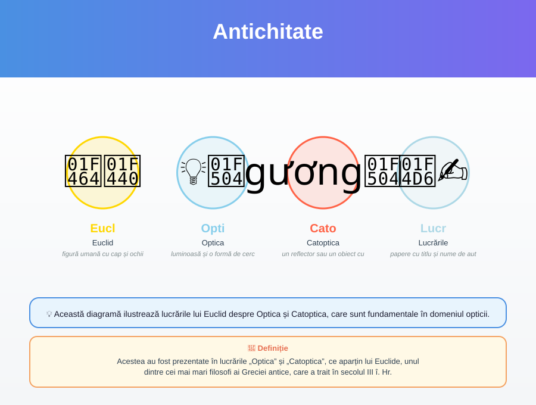
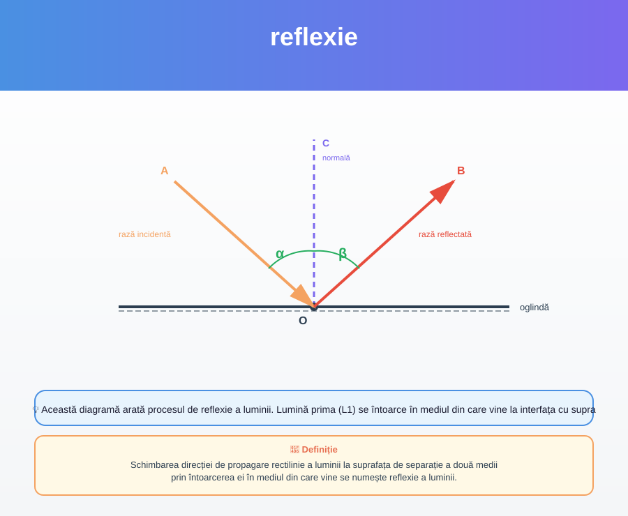

Acestea au fost prezentate în lucrările „Optica” și „Catoptica”, ce aparțin lui Euclide, unul dintre cei mai mari filosofi ai Greciei antice, care a trait în secolul III î. Hr.
Această diagramă ilustrează lucrările lui Euclid despre Optica și Catoptica, care sunt fundamentale în domeniul opticii.
p. 8
Schimbarea direcției de propagare rectilinie a luminii la suprafața de separație a două medii prin întoarcerea ei în mediul din care vine se numește reflexie a luminii.
Această diagramă arată procesul de reflexie a luminii. Lumină prima (L1) se întoarce în mediul din care vine la interfața cu suprafața de separație (S). Unghiul incidentă (θi) este format între L1 și suprafața de separație.
p. 8Suprafața plană, netedă și lucioasă care reflectă bine lumina se numește oglindă plană.
Oglinda plană este o suprafață netedă și lucioasă care reflectă bine lumina. Luminozitatea (L) se reflecțiază de această suprafață.
p. 8Imaginea obținută la intersecția prelungirilor raze- S lor reflectate se numește imagine virtuală.
Imaginea virtuală este formată de intersecția prelungirilor raze- S lor reflectate. Aceasta nu poate fi văzută direct, dar reprezintă poziția imaginii obținute prin reflexie.
p. 10